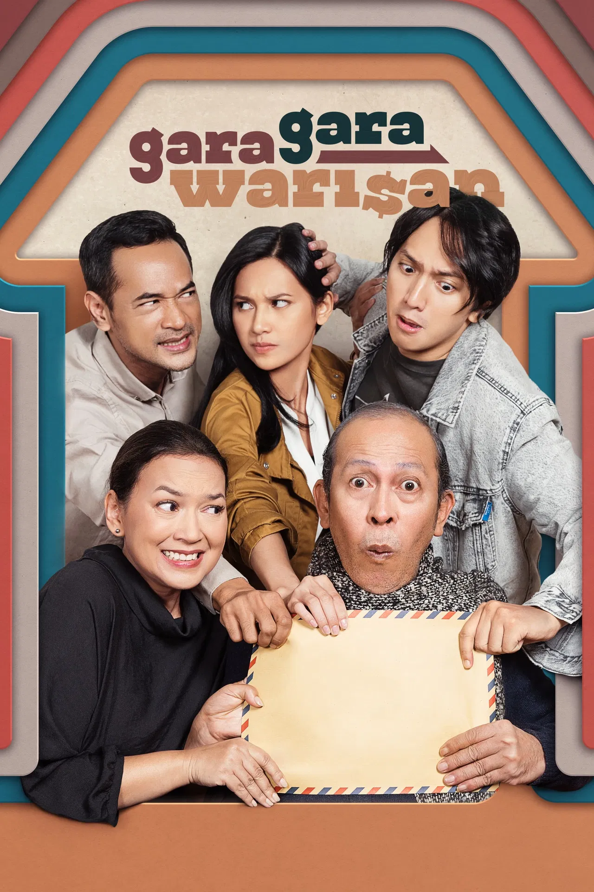

Gara-Gara Warisan
-
Deskripsi Singkat: Drama komedi keluarga tentang tiga bersaudara yang bersaing mengurus guest house demi mendapatkan warisan ayah mereka.
-
Aktor Pemeran Utama: Oka Antara, Indah Permatasari, Ge Pamungkas, Yayu Unru
-
Pengarang Cerita: Muhadkly Acho
Sutradara: Muhadkly Acho
-
Rating:
-
Sinopsis: Dahlan, seorang pemilik guest house yang sakit-sakitan, memberikan tantangan kepada ketiga anaknya: Adam (anak sulung yang sering gagal), Laras (anak tengah yang independen dan idealis), dan Dicky (anak bungsu kesayangan yang manja). Mereka harus bersaing mengurus guest house tersebut, dan siapa yang kinerjanya paling baik akan mewarisinya. Persaingan ini justru membongkar berbagai luka lama dan rahasia keluarga mereka.